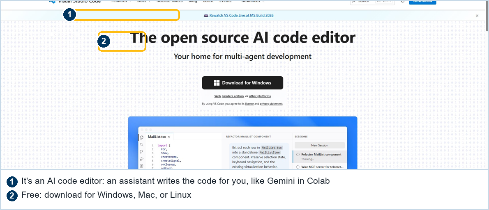
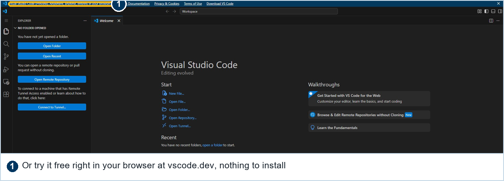

Choose your path / Full guide
Continuous improvement, by design
From FERPA-protected data to shareable reports
This guide grew out of a real student-evaluation pipeline that turned raw survey exports into per-instructor PDF reports with AI insight. But the shape of that pipeline isn't about evaluations, it's a reusable recipe for taking any sensitive education record and producing a clean, trustworthy, AI-summarized report. This site shows you how to transfer it, with system-agnostic code and a no-code Google Colab path.
This is a build guide, not a sales page. By the end you will be able to:
Abstract the pipeline
See evaluations as just one instance of a six-stage pattern that fits transcripts, advising notes, financial-aid records, conduct files, and more.
Call the LLM Sandbox API
Use an OpenAI-compatible, UCSB-controlled gateway from Python, Node, or plain HTTP, the same call this pipeline makes in production.
Cache for near-zero cost
Persist hard-won AI output so re-runs cost nothing. The cache is most of the "lean."
Do it without code
Run the whole thing in Google Colab, with your API key stored in Colab's Secrets manager, never pasted into a cell.
The idea that transfers
One shape, many datasets #
The evaluation pipeline is seven concrete steps, but underneath it is a six-stage pattern. Every stage is dataset-agnostic. Swap the inputs and the report template, keep the spine.
What "any FERPA data" means in practice
The pattern fits any record that has (a) some structured fields, (b) some free-text humans wrote, and (c) a natural "subject" to report on. A few examples of the same machine, re-pointed:
| Domain | Source export | The "subject" | Free-text the AI summarizes |
|---|---|---|---|
| Course evaluations origin | Qualtrics CSV | Instructor / course | Open-ended student comments |
| Academic advising | Advising-notes export | Student / advisor / program | Session notes & follow-ups |
| Field-placement / internships | Supervisor eval forms | Student placement | Supervisor narrative feedback |
| Program assessment | Rubric + reflection exports | Cohort / outcome | Reflective free-response |
| Student support / case notes | Case-management dump | Case / caseworker | Interaction summaries |
| Scholarship / aid review | Application + reviewer notes | Applicant / committee | Reviewer rationale text |
This is only the outer loop
Everything above is the outer loop, it ships a report every cycle. But the real story is a second loop running inside it: the continuous-improvement cycle that keeps the outer loop cheap and reliable. That's the next section.
Operate while you improve
The continuous-improvement loop #
This pipeline is drawn as two concentric loops. The outer loop is the six-stage pipeline doing the operational work each cycle. A faster inner loop, observe, diagnose, improve, verify, keeps making that work leaner, cheaper, and more reliable. AI is a tool used inside the loops, only where it earns its place. This is the part that makes the pipeline self-healing, and it transfers to any process you run on a recurring basis.
You don't need both loops to start. But once the outer loop runs on a schedule, the inner loop is what keeps it reliable as your data and formats change over time, and the cache is what keeps the inner loop free: re-running a fixed period re-reads cached insight instead of re-billing the model, so you can replay your fixes as often as you like at zero token cost.
The four phases, and how they transfer
| Phase | In the original pipeline | For your dataset |
|---|---|---|
| Observe read the run | Each run logs row counts, unmatched names, missing codes, token usage, and which records were freshly analyzed vs. served from cache. | Log the same: what came in, what failed to reconcile, what the AI actually saw, what it cost. You can't improve a run you can't see. |
| Diagnose root cause | A mislabeled quarter, a fragile column name, a name that didn't fuzzy-match, traced back to one cause, not patched at the symptom. | Ask why a record dropped out. Usually it's a brittle assumption about the source format, not a one-off. |
| Improve modular change | One small, testable change in a single module, a new column alias, a threshold tweak, never a sprawling rewrite. | Make the smallest change that fixes the cause. Keep it modular so the next run (and the next person) can reason about it. |
| Verify replay & cache | Replay the affected period. Cached insight makes the replay cost 0 tokens; only genuinely new work is re-billed. Confirm the fix, then ship. | Re-run and compare. A warm cache means verifying a fix is fast and free, so you actually do it. |
Do this part first
FERPA-safe AI: route through a gateway you control #
FERPA protects education records. The moment you send a student's free-text comment to a third-party AI API on the public internet, you have made a disclosure, and most consumer AI endpoints reserve rights you can't accept on behalf of an institution. The single most important architectural decision in this whole pipeline is therefore where the model call goes.
Use UCSB's gateway
The LLM gateway UCSB operates and vets keeps the request inside an approved boundary. At UCSB this is LLM Sandbox, an OpenAI-compatible endpoint in front of cloud foundation models, governed by the campus, token-metered rather than dollar-billed.
Don't train on the data
Confirm with your provider that prompts and completions are not retained for model training and are not logged beyond what you've approved. A gateway makes that one contract to verify, instead of one per team.
Minimize what you send
Send only the free-text that needs summarizing. Names, IDs, grades, and other identifiers belong in your structured pipeline, not in the prompt. De-identify before the call where you can.
Keep a human at the gate
AI drafts the insight; a person reviews and approves the report before it's shared. The model never has release authority. This is both a quality control and a compliance control.
The de-identification habit
Because the AI only ever needs the free-text, you can keep identifiers out of the prompt entirely. The pipeline numbers each comment so the model can cite it ([1], [2]) without ever knowing who wrote it:
# The model receives ONLY this, numbered, anonymous free-text.
# No names, no student IDs, no grades. Citations map back on YOUR side.
[1] Great instructor, explained tricky topics clearly.
[2] Office hours were hard to reach; otherwise excellent.
[3] Loved the real-world examples.The bracketed indices are reattached to the verbatim comments after the model responds, inside your own system, so the insight can say "students praised clarity [1][3]" while the model never saw an identity.
Before you write (or generate) a single line
Get your LLM Sandbox key (UCSB) #
Everything here needs two things from UCSB's LLM Sandbox: a base URL and an API key. There is no cost, this is the campus gateway. Here is how to get them.
Publish a bot and use its API (available now)
Build a bot in LLM Sandbox (llmsandbox.cloud.ucsb.edu), give it instructions and, if you like, knowledge (files or a URL). Then from Settings → My Bots open the bot's three-dots menu and choose API Publish Settings.

Publishing deploys a small REST API for that bot and gives you both an API Endpoint (the URL) and an API Key on one screen, each with a copy button, so you do not have to hunt for the URL separately. Copy both; the key stays hidden until you click Show. This route is open to anyone with LLM Sandbox access, and it is exactly the endpoint plus key that powers the "Ask the assistant" widget on this page.

Get a direct key and your base URL (developer preview)
For the raw, OpenAI-compatible calls the pipeline code uses, LLM Sandbox has a developer console at llmdev.cloud.ucsb.edu. Under the menu (top left) → Settings → My API Keys you can see your Base URL (paste it as the base_url in any OpenAI-compatible client, or as LLM_SANDBOX_BASE_URL in Colab Secrets) and a Generate new key button for a direct, account-level key. This is the key style the pipeline code and the Colab notebook here use.

The centerpiece
LLM Sandbox API reference #
UCSB's LLM Sandbox exposes an OpenAI-compatible Chat Completions API in front of cloud foundation models (Anthropic Claude on Amazon Bedrock, among others). "OpenAI-compatible" is the key fact: any OpenAI SDK or any tool that speaks the Chat Completions shape works against it, you only change the base URL and the auth header. Everything in this section generalizes to any gateway built on the same convention (LiteLLM, Bedrock Access Gateway, vLLM's OpenAI server, Azure OpenAI, etc.).
Base URL & authentication #
| Setting | Value | Where it comes from |
|---|---|---|
| Base URL | https://<your-llm-sandbox-host>/v1 | Your gateway admin (at UCSB, the LLM Sandbox team). Ends in /v1 like the OpenAI API. |
| Auth header | Authorization: Bearer <KEY> or x-api-key: <KEY> | Either one authenticates. OpenAI SDKs send the bearer automatically; x-api-key is handy for raw HTTP. |
| Model | claude-v4.5-haiku | One of many. List the live catalog with GET {BASE_URL}/models (see below). |
| Content type | application/json | Standard for all requests. |
Authorization: Bearer <KEY> (exactly what the OpenAI SDKs already send) or as an x-api-key: <KEY> header. Either one authenticates, so a normal OpenAI client works with just a base_url and api_key, no header surgery. The raw HTTP snippets use x-api-key because it is explicit; the bearer is equally valid. (Verified against the live gateway, Jun 2026.)
Endpoint: Chat Completions #
POST {BASE_URL}/chat/completions
Request body (the fields this pipeline uses; others from the OpenAI spec are accepted):
{
"model": "claude-v4.5-haiku",
"max_tokens": 1024,
"messages": [
{ "role": "system", "content": "You are a helpful assistant specialized in analyzing feedback." },
{ "role": "user", "content": "[1] Great instructor...\n[2] Office hours were hard to reach..." },
{ "role": "user", "content": "Generate a keyword summary and a cited insight..." }
]
}Response body (OpenAI shape, read choices[0].message.content and usage):
{
"id": "chatcmpl-...",
"object": "chat.completion",
"model": "claude-v4.5-haiku",
"choices": [
{ "index": 0,
"message": { "role": "assistant",
"content": "Keyword Summary: Clarity (Green), Office Hours (Orange);Feedback Insight: ..." },
"finish_reason": "stop" }
],
"usage": { "prompt_tokens": 1060, "completion_tokens": 254, "total_tokens": 1314 }
}The usage object is how you meter cost. On LLM Sandbox the budget is tokens, not dollars, total_tokens is the number that matters. A typical analysis is ≈ 1,060 in + 254 out ≈ 1.3K tokens.
Common parameters & models #
| Field | Type | Notes |
|---|---|---|
model | string | Required. A model ID from the gateway's catalog. |
messages | array | Required. {role, content} objects; roles are system, user, assistant. |
max_tokens | integer | Cap on the completion length. this pipeline uses 1024, enough for a keyword line + two short paragraphs. |
temperature | number | Optional. Lower (0 to 0.4) for consistent, reproducible summaries; the cache makes determinism cheap. |
stream | boolean | Optional. For batch report generation you almost always want false. For a live chat UI, set true and read the server-sent-event token chunks as they arrive. |
GET {BASE_URL}/models on UCSB's gateway returns a multi-provider list. Anthropic: claude-v4.6-sonnet, claude-v4.6-opus, claude-v4.5-haiku, claude-v3.7-sonnet, claude-v3.5-haiku, claude-v3-opus. Amazon: amazon-nova-pro, -lite, -micro. Also llama-4-maverick-17b-instruct, llama-4-scout-17b-instruct, llama3-3-70b-instruct, mistral-large-2, mixtral-8x7b-instruct, deepseek-r1, qwen3-32b, and OpenAI-named aliases like gpt-4o. Always pull the current list from /models; the catalog grows over time.
Errors & retries #
Because it's OpenAI-compatible, errors come back as HTTP status codes with a JSON body. Handle them the way you'd handle the OpenAI API:
| Status | Meaning | What to do |
|---|---|---|
401 / 403 | Key missing, wrong, or revoked | Send a current key as Authorization: Bearer or x-api-key. Don't retry. |
404 | Unknown model or wrong path | Verify the model ID and that the base URL ends in /v1. |
429 | Rate / quota limit | Back off and retry with exponential delay. Caching reduces how often you hit this. |
5xx | Gateway / upstream error | Retry a few times with backoff; then log and skip that record (don't fail the whole run). |
The production rule here: a failed analysis returns an "Error in analysis: ..." string and is not cached, so the next run retries it cleanly. One bad record never blocks the rest of the batch.
x-api-key), and every OpenAI tool, SDK, and snippet just works.Copy, paste, adapt
System-agnostic snippets #
Here is the same call in four flavors. Each takes a list of free-text comments and returns a keyword summary + cited insight. The base URL, key, and model always come from the environment / a secrets store, never hard-code them.
# pip install openai
import os
from openai import OpenAI
client = OpenAI(
base_url=os.environ["LLM_SANDBOX_BASE_URL"], # https://<host>/v1
api_key=os.environ["LLM_SANDBOX_API_KEY"], # the SDK sends it as Bearer; the gateway accepts it
)
def analyze(comments):
numbered = "\n".join(f"[{i}] {c}" for i, c in enumerate(comments, 1))
resp = client.chat.completions.create(
model=os.environ.get("LLM_SANDBOX_MODEL", "claude-v4.5-haiku"),
max_tokens=1024,
messages=[
{"role": "system", "content": SYSTEM_PROMPT},
{"role": "user", "content": numbered},
{"role": "user", "content": TASK_PROMPT},
],
)
print("tokens used:", resp.usage.total_tokens) # your real budget
return resp.choices[0].message.content# pip install requests, no SDK, pure HTTP
import os, requests
def analyze(comments):
numbered = "\n".join(f"[{i}] {c}" for i, c in enumerate(comments, 1))
r = requests.post(
os.environ["LLM_SANDBOX_BASE_URL"] + "/chat/completions",
headers={
"x-api-key": os.environ["LLM_SANDBOX_API_KEY"],
"Content-Type": "application/json",
},
json={
"model": os.environ.get("LLM_SANDBOX_MODEL", "claude-v4.5-haiku"),
"max_tokens": 1024,
"messages": [
{"role": "system", "content": SYSTEM_PROMPT},
{"role": "user", "content": numbered},
{"role": "user", "content": TASK_PROMPT},
],
},
timeout=60,
)
r.raise_for_status()
data = r.json()
return data["choices"][0]["message"]["content"]// Node 18+ has fetch built in. No dependencies.
async function analyze(comments) {
const numbered = comments.map((c, i) => `[${i + 1}] ${c}`).join("\n");
const res = await fetch(process.env.LLM_SANDBOX_BASE_URL + "/chat/completions", {
method: "POST",
headers: {
"x-api-key": process.env.LLM_SANDBOX_API_KEY,
"Content-Type": "application/json",
},
body: JSON.stringify({
model: process.env.LLM_SANDBOX_MODEL ?? "claude-v4.5-haiku",
max_tokens: 1024,
messages: [
{ role: "system", content: SYSTEM_PROMPT },
{ role: "user", content: numbered },
{ role: "user", content: TASK_PROMPT },
],
}),
});
if (!res.ok) throw new Error(`Sandbox ${res.status}`);
const data = await res.json();
return data.choices[0].message.content;
}# Smoke-test the gateway from any terminal.
curl "$LLM_SANDBOX_BASE_URL/chat/completions" \
-H "x-api-key: $LLM_SANDBOX_API_KEY" \
-H "Content-Type: application/json" \
-d '{
"model": "claude-v4.5-haiku",
"max_tokens": 1024,
"messages": [
{"role": "system", "content": "You are a helpful assistant specialized in analyzing feedback."},
{"role": "user", "content": "[1] Great instructor.\n[2] Office hours hard to reach."},
{"role": "user", "content": "Give a keyword summary and a cited insight."}
]
}'The two prompts (you can lift these verbatim)
The insight quality comes mostly from the prompt. The system prompt sets the role; the task prompt asks for a color-coded keyword summary plus a short, citation-grounded insight, which is what stops the model from inventing problems students never raised.
SYSTEM_PROMPT = "You are a helpful assistant specialized in analyzing feedback."
TASK_PROMPT = (
"Using the provided feedback comments, generate a concise keyword summary "
"and insight. Each keyword is one to two words, color-coded by sentiment "
"(Green / Orange / Red) based strictly on the feedback's actual tone. Lean "
"positive: use Orange or Red only when a comment clearly raises a concern; "
"never invent problems or misread praise. The insight is one to two short "
"paragraphs, no longer than the original comments, and must NOT add anything "
"not present. Comments are numbered [1], [2]...; in the insight, cite the "
"comments that support each statement inline, e.g. [2] or [3][7]. Only cite "
"numbers that appear. Do not use markdown."
)[n] citations grounds every claim in a real, numbered comment. It makes the insight auditable (a reviewer can click back to the source), and it sharply reduces hallucination, the model can't cite a comment that doesn't exist.
Where the "lean" lives
Caching for (near) zero cost #
The single biggest cost lever is not analyzing the same thing twice. This pipeline persists every AI insight keyed by (scope, subject, period). Re-running an already-analyzed period reads from the cache and spends 0 tokens. You only pay for genuinely new records.
(scope, subject, period), e.g. ("instructor","Doe, Jane","F25").A single SQLite file is plenty, it's ACID, queryable, needs no server, and travels with your project. The schema this pipeline uses:
import sqlite3, datetime
db = sqlite3.connect("ai_cache.sqlite")
db.execute("""
CREATE TABLE IF NOT EXISTS ai_cache(
scope TEXT, subject TEXT, period TEXT,
analysis TEXT, model TEXT,
input_tokens INTEGER, output_tokens INTEGER, cost_usd REAL,
created_at TEXT,
PRIMARY KEY (scope, subject, period) -- the cache key
)""")
def get_or_analyze(scope, subject, period, comments):
row = db.execute(
"SELECT analysis FROM ai_cache WHERE scope=? AND subject=? AND period=?",
(scope, subject, period)).fetchone()
if row: # cache HIT → 0 tokens
return row[0]
analysis = analyze(comments) # cache MISS → one gateway call
db.execute(
"INSERT OR REPLACE INTO ai_cache VALUES (?,?,?,?,?,?,?,?,?)",
(scope, subject, period, analysis, "claude-v4.5-haiku",
0, 0, None, datetime.datetime.now().isoformat()))
db.commit()
return analysisprompt_version to the key instead of wiping the cache, old and new coexist.
Measured, not guessed
Token economics #
On a token-metered gateway the budget is tokens. These are the ground-truth rates measured in production for short free-text summarization:
| Operation | Token cost | Why |
|---|---|---|
| Re-run an already-analyzed period | 0 tokens | Served from the warm cache, no model call. |
| One new analysis | ≈ 1.3K (~1,060 in / ~254 out) | A few comments in, a keyword line + short insight out. |
| A live validation / smoke-test call | ≈ 1.3K | Same shape as a real analysis. |
| A fresh cycle (50 to 150 new analyses) | ≈ 65K to 200K | Only the genuinely new subjects get analyzed. |
Note: dollar figures, if you compute them, are a list-price proxy only, a UCSB-provided gateway like LLM Sandbox meters tokens rather than billing you per call.
No developer required
The no-code path: Google Colab + Secrets #
You can run this entire pipeline in Google Colab, a free, browser-based Python notebook, without installing anything. The one thing you must never do is paste your API key into a cell. Colab has a built-in Secrets manager for exactly this.
Colab in one picture: cells & output
A Colab notebook is a stack of cells. You put code (or notes) in a cell and run it; the result appears right below. That is the whole model. For the no-code path you mostly press one button, Run all, and read what comes out.

Meet Gemini, Colab's built-in AI helper
Colab ships with Gemini, an AI assistant that writes and explains code from a plain-English prompt. This is the helper that makes the no-code path work: ask it to "read advising_notes.xlsx and show the first rows" and it drops a runnable cell in for you. Open it from the spark button, or click generate inside any empty cell.

The trick for non-coders: you don't edit the code, Gemini does
Now put Gemini to work. Every cell comes pre-filled with working example code. To make a cell fit your spreadsheet, you do not edit it by hand. You click the cell, tell Gemini what your columns are called in plain English, and it rewrites the cell for you. Then you click Accept & Run. That is the whole skill, and you already have it.

What to tell Gemini (copy this, fill in your own column names)
Rewrite the column-renaming cell in my notebook to match my spreadsheet:
- the column with the person or subject is called "YOUR COLUMN NAME"
- the column with the time period (term, quarter, or year) is called "YOUR COLUMN NAME"
- the column with the free-text comments is called "YOUR COLUMN NAME"
Keep everything else the same.You can talk to any cell the same way: "use my file name advising_notes.xlsx", "change the roster to these advisor names", "only analyze groups with at least 3 comments". Describe the change in words and let Gemini write the code. The example code stays right there as a reference, and Gemini shows its edit as a colored diff you approve before anything runs.
Step 1, Store your key in Colab Secrets
Don't have a key yet? Grab one first, see Get your LLM Sandbox key (it takes a minute).
- Open a new notebook at colab.research.google.com.
- In the left sidebar, click the 🔑 key icon ("Secrets").
- Click + Add new secret. Add three secrets, toggling Notebook access on for each:
LLM_SANDBOX_BASE_URL→ your gateway URL ending in/v1LLM_SANDBOX_API_KEY→ the key your gateway admin gave youLLM_SANDBOX_MODEL→ e.g.claude-v4.5-haiku

Step 2, Read the secrets in code
Colab exposes secrets through google.colab.userdata. This is the only Colab-specific line in the whole pipeline:
from google.colab import userdata
BASE_URL = userdata.get("LLM_SANDBOX_BASE_URL")
API_KEY = userdata.get("LLM_SANDBOX_API_KEY")
MODEL = userdata.get("LLM_SANDBOX_MODEL")
# From here on, the code is identical to the snippets above,
# nothing else in the pipeline knows or cares that it's running in Colab.Step 3, Bring in your data file (a spreadsheet is just a file)
Open the Files panel (the folder icon in the left rail). There are two ways to get data in: Upload a file straight into the session (quick, but it disappears when the runtime resets), or Mount Drive to read from your Google Drive (persistent, tied to your account). A spreadsheet, .csv or .xlsx, is just a file: bring it in, then read it with pandas.

# After Upload (session) or Mount Drive, read your spreadsheet:
import pandas as pd
df = pd.read_excel("advising_notes.xlsx") # or pd.read_csv("...") for a CSV
# Mounted Drive files live under /content/drive/MyDrive/...
df.head()Charts: let Gemini write the chart, don't let AI draw it
Your spreadsheet has structured numbers too, the KPIs: satisfaction scores, counts, response times. Those belong in charts, not in the AI summary. Here is the important distinction. You do not ask an AI to "draw me a chart", that gives you a different, possibly wrong picture every time. Instead you ask Gemini to write the few lines of charting code. The code runs the same way every time, so the same data always makes the same chart. It is consistent, reproducible, and auditable, the same reason the free-text analysis is grounded in citations.
What to tell Gemini (a bar chart of one KPI by subject)
Add a cell that makes a bar chart from my data:
- one bar per advisor (the "subject" column)
- bar height = the average of the "Satisfaction (1-5)" column
- title it "Average satisfaction by advisor"
- use the color #003660 for the bars
Use matplotlib, label the axes, and sort the bars from highest to lowest.Swap Satisfaction (1-5) for any KPI column (the sample also has Response time (hrs) and Session length (min)), and advisor for your subject. Gemini writes the matplotlib code, you click Accept & Run, and the chart appears under the cell. Same data, same chart, every time.
Pick your colors (a quick HTML-color primer)
Colors on the web are hex codes: a # followed by six characters, two for red, two for green, two for blue (00 = none, ff = full). You do not need to memorize them, just copy one. Here are good defaults that match this site, plus a friendly spread:
#003660navy#1178b5blue#febc11gold#2e7d52green#b9760forange#b3402fred#5a4b8apurple#0f8a8atealTo recolor a chart, just tell Gemini the hex code: "use #1178b5 for the bars", or "color each advisor differently using #003660, #1178b5, and #febc11". Want a color that is not here? Pick one with any web color picker (search "html color picker"), copy its # code, and hand it to Gemini. The defaults above are a safe, on-brand starting point if you would rather not choose.
Next: the worked example wires all of this into five cells you can paste straight into Colab.
End to end, in one notebook
Worked example: advising notes → report #
Let's transfer the pipeline to a non-evaluation dataset: an advising office has a messy CSV of session notes and wants a per-advisor summary report. Same six stages, different inputs. Each block below is one Colab cell. A downloadable copy is linked at the end.
Cell 1, Setup
# Cell 1, install + read secrets (see "No-code path" above)
!pip install openai pandas --quiet
from google.colab import userdata
from openai import OpenAI
client = OpenAI(
base_url=userdata.get("LLM_SANDBOX_BASE_URL"),
api_key=userdata.get("LLM_SANDBOX_API_KEY"),
default_headers={"x-api-key": userdata.get("LLM_SANDBOX_API_KEY")},
)
MODEL = userdata.get("LLM_SANDBOX_MODEL") or "claude-v4.5-haiku"Cell 2, Ingest & standardize (stages 1 to 2)
import pandas as pd
from google.colab import files
up = files.upload() # pick your messy CSV
raw = pd.read_csv(next(iter(up)))
# Standardize: map whatever the export called things to clean names.
# NEVER edit the source file, build this clean layer on top of it.
df = raw.rename(columns={
"Advisor (full name)": "advisor",
"Term": "period",
"Notes / summary": "note",
})[["advisor", "period", "note"]].dropna(subset=["note"])
df.head()Cell 3, Reconcile identity (stage 3)
!pip install thefuzz --quiet
from thefuzz import process
# A roster of canonical advisor names is your source of truth.
ROSTER = ["Garcia, Maria", "Okoro, Daniel", "Chen, Wei"]
def canonical(name, threshold=85):
match, score = process.extractOne(name, ROSTER)
return match if score >= threshold else None # drop the unmatched, log them
df["advisor"] = df["advisor"].map(canonical)
df = df.dropna(subset=["advisor"])Cell 4, AI insight, cached (stage 4)
import sqlite3, datetime
db = sqlite3.connect("ai_cache.sqlite")
db.execute("CREATE TABLE IF NOT EXISTS c(subject TEXT, period TEXT, analysis TEXT, "
"PRIMARY KEY(subject, period))")
SYSTEM_PROMPT = "You are a helpful assistant specialized in analyzing feedback."
TASK_PROMPT = "Give a concise keyword summary (each 1-2 words) and a one-paragraph " \
"insight. Comments are numbered [1],[2]; cite them inline. Add nothing " \
"not present. No markdown."
def analyze(notes):
numbered = "\n".join(f"[{i}] {n}" for i, n in enumerate(notes, 1))
r = client.chat.completions.create(model=MODEL, max_tokens=1024, messages=[
{"role":"system","content":SYSTEM_PROMPT},
{"role":"user","content":numbered},
{"role":"user","content":TASK_PROMPT}])
return r.choices[0].message.content
def get_or_analyze(subject, period, notes):
hit = db.execute("SELECT analysis FROM c WHERE subject=? AND period=?",
(subject, period)).fetchone()
if hit: return hit[0] # 0 tokens
out = analyze(notes)
db.execute("INSERT OR REPLACE INTO c VALUES (?,?,?)", (subject, period, out))
db.commit()
return out
insights = {}
for (advisor, period), grp in df.groupby(["advisor", "period"]):
if len(grp) >= 5: # skip tiny groups: too little signal
insights[(advisor, period)] = get_or_analyze(advisor, period, list(grp["note"]))Cell 5, Render the report (stages 5 to 6)
!pip install reportlab --quiet
from reportlab.platypus import SimpleDocTemplate, Paragraph, Spacer
from reportlab.lib.styles import getSampleStyleSheet
styles = getSampleStyleSheet()
for (advisor, period), text in insights.items():
fname = f"report_{advisor}_{period}.pdf".replace(", ", "_")
doc = SimpleDocTemplate(fname)
doc.build([
Paragraph(f"Advising Summary, {advisor} ({period})", styles["Title"]),
Spacer(1, 12),
Paragraph(text.replace("\n", "<br/>"), styles["BodyText"]),
])
files.download(fname) # human reviews before anyone else sees itTry it now: companion notebook + sample data
You do not need your own data to start. Open the ready-to-run companion notebook and the matching sample data (synthetic advising notes, no real records) from the shared Drive, then in Colab choose File → Save a copy in Drive, add your three Secrets, and press Run all. It produces real reports end to end on the sample, so your first run always succeeds and you can see what "done" looks like before touching your own data.
When you are ready for your own data: upload your spreadsheet (or Mount Drive), then ask Gemini to point the notebook at your file and columns. Colab notebooks share like a Google Doc (the Share button, top right), so you can hand a colleague a ready-to-run copy or co-edit one together.
When you outgrow Colab
Beyond Colab: VS Code (free, and still no-code) #
Colab is the easiest place to start, and it covers this entire pipeline. When you want to keep files on your own machine, work offline, or manage a bigger project, the usual next step is Visual Studio Code (VS Code), Microsoft's code editor. Two things to know before you worry:
- It's free. Download it for Windows, Mac, or Linux, or run it right in your browser at vscode.dev with nothing to install.
- It's also a no-code tool. VS Code calls itself an "AI code editor": with an AI assistant (GitHub Copilot, Cline, Continue, and others) you describe what you want in plain English and it writes and edits the code for you, the exact same move you already learned with Gemini in Colab. So "the jump" to VS Code is not a jump into writing code; it is a jump into a roomier place to let AI write it.

You do not need VS Code for anything on this site. But if your current tools feel limiting and Colab is starting to feel small, this is the gentle next step, and the "ask the AI to write it" habit carries straight over.

Carry these, forget the rest
Three principles & a launch checklist #
1 · Build on top, never mutate
Treat the source export as read-only. Every transformation produces a new clean layer. You can always re-derive; you can never un-corrupt a source you edited in place.
2 · Cache hard-won output
Pay for new work only, never repeated work. A relational key keeps the cache warm across runs and makes "re-run the whole thing" free.
3 · Let the system read its own runs
Code analysis and feedback are the cheapest improvement engine you have. One small, modular, testable change per cycle compounds.
Launch checklist
| Done? | Before you send real FERPA data |
|---|---|
| Unchecked | Gateway approved by your registrar / privacy office / IT security for this data class |
| Unchecked | Confirmed prompts & completions are not retained for training or extra logging |
| Unchecked | Only free-text leaves your system; identifiers stay in the structured layer |
| Unchecked | API key in a secrets store (Colab Secrets / env var / vault), never in a cell or commit |
| Unchecked | Insight requires inline citations; output is reviewable against verbatim source |
| Unchecked | A human approves every report before it is shared |
| Unchecked | Cache keyed for warmth; failed analyses are not cached (they retry next run) |
| Unchecked | Dry-run on synthetic data passed end to end |
Full transparency
How this site (and its assistant) were made #
This site is itself an example of the pattern it describes. A human set the goal and held the gate; an AI working through UCSB's LLM Sandbox did the heavy lifting; every change was reviewed before it shipped.
The process
- A human set the goal and the guardrails. The brief: explain how to move the FERPA-data-to-reports pipeline to any department, center it on the LLM Sandbox API, and make it followable by non-developers. Constraints (FERPA-first, no legal claims, house style) were given up front.
- The AI drafted, then revised in small passes. Writing, code samples, the diagrams, the layout, and the chat widget were generated and then refined iteratively, re-reading the work and adjusting it, the same inner loop the continuous-improvement section describes.
- A human proofread and approved every change before anything went live. The model never had the release gate.
The small ✎ revised 1× badges next to each section heading are honest counts from that build: how many times the section's wording was adjusted (revised), not how many times content was added.
The assistant (the chat button)
The "Ask the assistant" button opens a chat backed by a bot published on UCSB's LLM Sandbox, grounded only on this site's content. It is the same lesson the site teaches, applied to itself: a small cheap model, grounded retrieval, citations, and a tight scope. Its configuration:
| Setting | Value | Why |
|---|---|---|
| Knowledge | This entire site, exported as Markdown | Reliable retrieval; the embed's iframe is not crawlable, so a clean file beats a URL crawl |
| Instructions | Scoped to this site; cite sources; no legal advice; reinforce de-identification; house style | Quality and safety in one place |
| Model | Claude Haiku (4.5) on Bedrock | Fast and low-cost; the same model class the pipeline uses for analysis |
| Temperature | 0.2 | Consistent, low-drift answers |
| Grounding check | ~0.7 | Blocks claims the site does not support |
| Citations | On | Every answer can be traced back to a section |
| Delivery | Published REST API + this in-page widget (async post, then poll) | In-page chat with no separate login wall |
It's open source, including the key-hiding trick
This whole site is a public repo: github.com/UCSB-PaCE/ferpa-data-reports. It is plain static HTML on GitHub Pages, so updating it is a git push. The one piece worth a developer's attention: the chat widget here is on a public page, yet its API key is nowhere in the source. The widget calls a tiny Cloudflare Worker proxy that holds the key as a server-side secret, allows only this origin, and rate-limits requests, then forwards to the bot API with the key attached. That is the standard pattern for putting a keyed API behind a public site, and the Worker code is short enough to read in a minute.